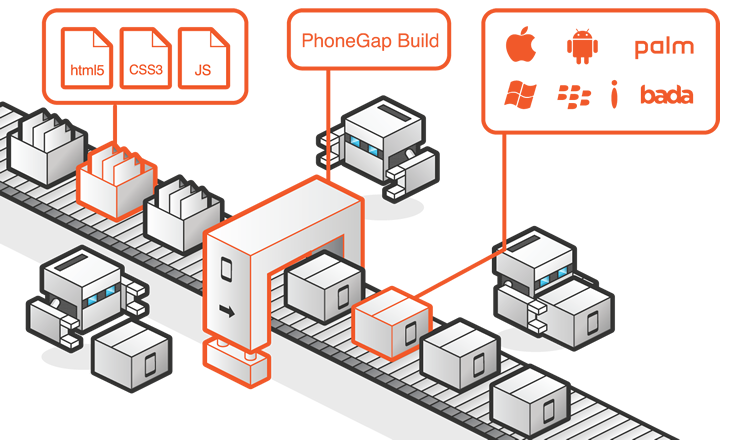
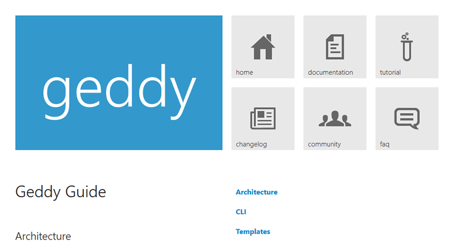
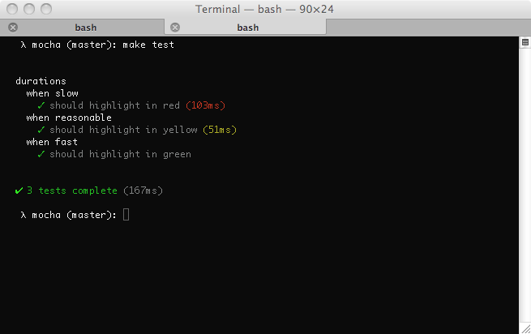
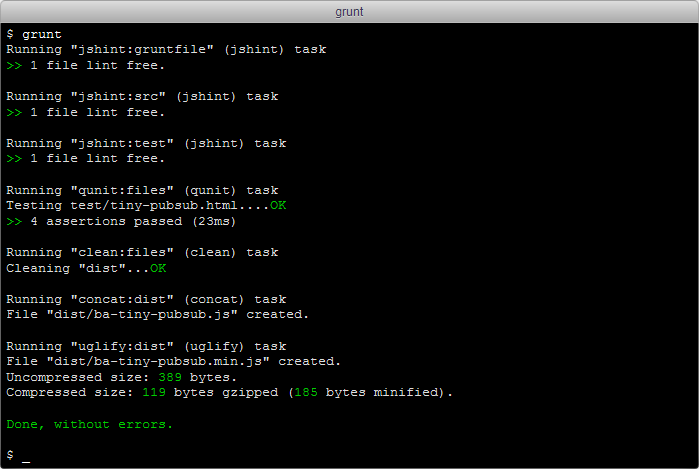
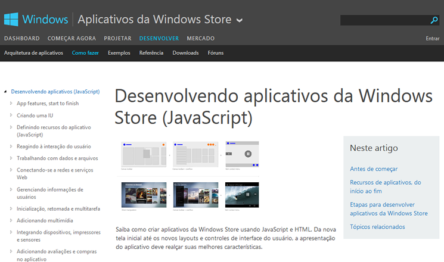

Em todos os lugares
Guilherme Farias
www.guilhermefarias.com.br
@guiky
O JavaScript mudou
Mas muita gente ainda só conhece o JavaScript antigo
JavaScript Antigo
Junho de 1997 - Ecmascript 1
Primeira edição
Junho de 1998 - Ecmascript 2
Mudanças editoriais para manter a especificação totalmente alinhada com o padrão internacional ISO/IEC 16262
Dezembro de 1999 - Ecmascript 3
Adicionado expressões regulares, melhor manipulação de strings, novas instruções de controle, manipulação de exceção try/catch, definição mais rigorosa dos erros, formatação para saída numérica e outras melhorias
Dezembro de 1999 - Ecmascript 3

ABANDONADO Ecmascript 4
Esta quarta edição foi abandonada devido às diferenças políticas sobre a complexidade da linguagem.
Muitos recursos propostos para a quarta edição foram completamente abandonados, alguns estão sendo propostos na sexta versão do ECMAScript.
JavaScript Moderno

Dezembro de 2009 - Ecmascript 5
Acrescenta o "strict mode", um subconjunto que fornece uma verificação de erro mais completa e evita construções sujeitas a erros.
Esclarece muitas ambiguidades da terceira especificação edição, e acomoda comportamento de implementações do mundo real que diferiam de forma consistente desde que a especificação.
Adiciona alguns novos recursos, como getters e setters, suporte nativo ao JSON e reflexão mais completa sobre as propriedades do objeto.
Junho de 2011 - Ecmascript 5.1 (atual)
Esta edição do ECMAScript está totalmente alinhada com a terceira edição da norma internacional ISO/IEC 16262:2011
JavaScript do futuro

Ecmascript 6
Esta sexta edição adiciona uma nova sintaxe significativa para a criação de aplicativos complexos, incluindo classes e módulos, mas define-semanticamente nos mesmos termos como ECMAScript 5 modo estrito.
Outros novos recursos incluem iterators e loops for/of, geradores no estilo Python e geradores de expressões, arrow functions, dados binarios, collections (maps, sets e weak maps), e proxies (metaprogramação de objetos virtuais and wrappers).
Ecmascript 7
A sétima edição está em um estágio muito inicial de desenvolvimento, mas pretende continuar os temas da reforma da linguagem, o isolamento de código, controle de efeitos, biblioteca e ferramenta que foram habilitadas no ES6. As novas funcionalidades propostas incluem promises/concurrency, melhorias nos números e na matemática, guards e trademarks (uma alternativa para tipagem estática), sobrecarga de operadores, tipos de valor (número de primeira classe como objetos), novas estruturas de registro (registros, tuplas e array tipados), pattern matching e traits.
E onde está o JavaScript hoje?
Navegador
Mobile

Phonegap
Titanium
Performance? Fastbook!
Servidor
NodeJS

Express
Geddy
Sails
PartialJS
Flatiron
SocketStream
Linha de comando
Grunt

Grunt
Yeoman
Yeoman
E outras...
Mocha
PhantomJS
JSLint
Uglifyjs
LESS
CoffeeScript compiler
Desktop
Jogos (Unity)
Sencha Desktop Packager
Windows 8
AppJS - Mac, Linux e Windows
TideSDK
TideSDK - Linux
TideSDK - Windows
TideSDK - Mac
Chrome Desktop Apps

Sistemas
Operacionais

Operacionais
Firefox OS

Node OS

Banco de dados
Couch DB

Mongo DB

Robôs
Noduino
Duino
Johnny Five
Johnny Five
Drones
Drones
JSON

O JavaScript Object Notation está presente em
- C
- C++
- C#
- Java
- PHP
- Python
- Ruby
- Lua
- Haskell
- ActionScript
Links
- http://phonegap.com/
- http://www.appcelerator.com/titanium/
- http://www.sencha.com/products/touch/
- http://www.sencha.com/blog/the-making-of-fastbook-an-html5-love-story/
- http://nodejs.org
- http://expressjs.com/
- http://geddyjs.org/
- http://sailsjs.org/
- http://partialjs.com/
Links
- http://flatironjs.org/
- http://socketstream.org/
- http://gruntjs.com/
- http://yeoman.io/
- http://portuguese.unity3d.com/
- https://www.sencha.com/products/sdp
- http://msdn.microsoft.com/pt-br/library/windows/apps/br211385.aspx
- http://appjs.com/
- http://www.tidesdk.org/
Links
- http://chrome.blogspot.com.br/2013/09/a-new-breed-of-chrome-apps.html
- https://marketplace.firefox.com/developers/
- http://nodeos.github.io/
- http://couchdb.apache.org/
- http://www.mongodb.org/
- http://semu.github.io/noduino/
- https://github.com/ecto/duino
- https://github.com/rwaldron/johnny-five
- http://dronegames.co/